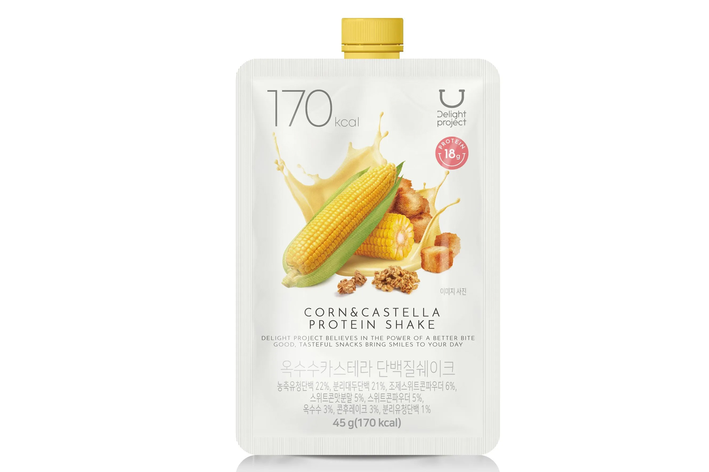

바나나라떼 단백질쉐이크
다이소 바나나라떼 단백질쉐이크 — 간편 단백질 음료.
바나나라떼 맛 단백질 쉐이크는 다이소에서 고르는 간편 단백질 음료·파우더류입니다. 여행 중 아침·운동 후 간식으로 찾는 경우가 많습니다.
바나나라떼 맛 단백질 쉐이크는 다이소에서 고르는 간편 단백질 음료·파우더류입니다. 여행 중 아침·운동 후 간식으로 찾는 경우가 많습니다.
유당·알레르기·칼로리 표기를 확인하고, 냉장 제품이면 개봉 후 빨리 드세요.
사는 팁
구매 팁 파우더형은 액체 제한에 유리하고, RTD 음료는 개봉 전 유통기한을 보세요.